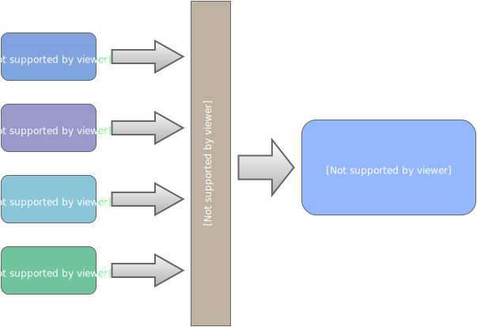
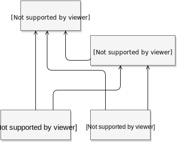
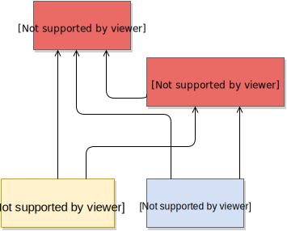

Hvorfor webpack?
Webpack
Bundler moduler for nettleseren

feed.html:
<script src="feed-bundle.js"> </script>
profile.html:
<script src="profile-bundle.js"> </script>
Optimalserte bundles
webpack.optimize.CommonsChunkPlugin:

feed.html:
<script src="feed-bundle.js"> </script>
<script src="common.js"> </script>
profile.html:
<script src="profile-bundle.js"> </script>
<script src="common.js"> </script>
Importer hva som helst
require('./style.scss');
var imgElement = document.createElement('img');
imgElement.src = require('./image.png');
document.body.appendChild(imgElement);
module.exports = {
entry: './main.js',
output: {
filename: 'bundle.js'
},
module: {
loaders: [
{test: /\.scss$/, loader: "style!css!sass"},
{test: /\.png$/, loader: "url-loader?limit=10000"}
]
}
};
Single page apps
- God brukeropplevelse, men byr på utfordringer:
- Bør kun laste ned det vi trenger
- Hvordan? "Split points" i front-end ruteren!
Loading
Asynkron lasting av moduler
// Front-end router
window.onpopstate = function() {
showLoadingIndicator();
if (window.location.pathname === '/profile') {
require.ensure([], function() {
hideLoadingIndicator();
require('./pages/profile').show();
});
} else if (window.lcation.pathname === '/feed') {
require.ensure([], function() {
hideLoadingIndicator();
require('./pages/feed').show();
});
}
}
Annet snacks
- Hot module replacement
- Transformasjoner nødvendig for prod:
- Minifisering
- Komprimering
- Linting
- ++

- https://www.youtube.com/watch?v=VkTCL6Nqm6Y
- https://github.com/petehunt/webpack-howto